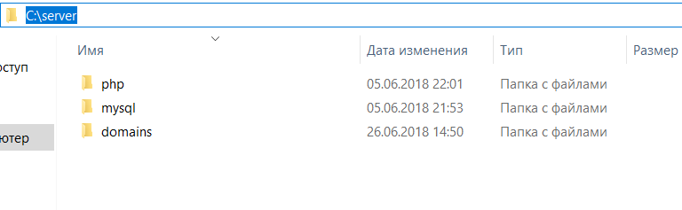

Если вы не используете готовые сборки, например OpenServer, и решили установить все по отдельности то эта инструкция для Вас.
Данная инструкция будет полезна начинающим WEB-разработчикам, которые собираются установить на своем ПК с ОС Windows WEB-сервер Nginx с интерпретатором PHP последних версий.
Конечно же, намного проще установить сборку или прибегнуть к использованию
инсталляторов и не париться по поводу настроек.
Однако каждый WEB-разработчик обязан понимать процесс работы WEB-сервера, процесс его установки и настройки.
Удалите все WEB-серверы, которые устанавливали до этого, зайдите в службы и убедитесь, что там нет служб Apache или IIS. Если у вас уже установлен какой-либо веб-сервер, второй параллельно скорее всего не заработает вовсе.
Если у Вас есть Скайп, обязательно отключите в настройках использование 80 порта. В конечном итоге Вы должны убедиться, что ни одна служба не использует 80й порт.
Для работы очень желательно иметь файловый менеджер, позволяющий создавать файлы с любыми расширениями, либо, что еще лучше, редактор кода, напрмиер Atom или PhpStorm.
Структура папок может быть различной, однако данная инструкция написана под определенную структуру и, если ей следовать, всё гарантированно заработает.
Перед тем как начать, создайте на диске C папку server, внутри которой создайте 4 подпапкок: nginx, php, mysql, domains. Именно так. Без указания номеров версий.

В каталоге domains создаем еще 2 папки: localhost и phpmyadmin
Создаем индексные файлы (при помощи файлового менеджера или редактора кода), которые будут нужны для проверки того, что все работает и помещаем их в папку localhost:


Так же в папку host (C:\Windows\System32\drivers\etc), добавьте следующие строки (без знака #):
127.0.0.1 localhost
127.0.0.1 phpmyadmin
В будущем, если вы решите создавать свои домены не забудте их прописать в файле host по аналогии.
Переходим по ссылке и скачиваем стабильную версию.

Распакуем файлы из архива в нашу папку nginx, которая находится в папке server.
На этом этап установки завершен. Чтобы убедится, что вы все сделали правильно, зайдите в папку nginx и запустит nginx.exe

Затем в браузере введите http://localhost и вы должны увидеть следующее:

Чтобы остановить сервер в командной строке прописываем: taskkill /f /IM nginx.exe
Скачать архив (Zip)
x86 — версия для 32-битной ОС, x64 — 64-битная версия. Из Thread Safe и Non Thread Safe выбираем Thread Safe (c поддержкой многопоточности).


Переходим на Официальный сайт MySQL и скачиваем MySQLInstaller MSI


Далее следует конфигурация нашего MySQL
Все разделы оставляем по умолчанию кроме Authentication Method и Accounts and Roles
В первом случае выбираем второй пункт

В разделе Accounts and Roles нужно ввести пароль который нужно запомнить! В последующем он нам понадобится для входа в phpmyadmin

В конце конфигурирования должно быть так:

На этом с установкой все.
Переходим на сайт и скачиваем архив.

Файлы из архива распакуем в папку phpmyadmin (c:/server/domains/phpmyadmin)

Логин для входа - root
Пароль - тот который указали при установке MySQL
Начнем с Nginx
Откройте файл конфигурации Nginx в редакторе кода

Подробно описывать каждую строку конфигурации в данной инструкции нет смысла, т.к. на этапе обучения они вам вряд ли понадобятся, но если интересно можете почитать более подробно в официальной документации.
Найдем блок server и заменим его содержиоме на следующтй код:
server
{
listen 80 default;
server_name ~^(www\.)?(?<domain>.+)$;
server_tokens off;
#charset koi8-r;
#access_log logs/access.log main;
location /
{
root c:/server/domains/$domain/;
index index.php index.html index.htm;
location ~ \.php$
{
fastcgi_pass 127.0.0.1:9000;
fastcgi_index index.php;
fastcgi_param SCRIPT_FILENAME $document_root$fastcgi_script_name;
include fastcgi_params;
}
}
#error_page 404 /404.html;
error_page 500 502 503 504 /50x.html;
location = /50x.html
{
root html;
}
}
В итоге должно получится так:

Далее настройки PHP
Перейдем в c:/server/php и найдем файл php.ini (возможно у вас их будет 2 и они будут с префиксами, тогда просто переимнуйте php.ini-development в php.ini)
Открывем его и нажимаем Ctrl+F, в строке поиска прописываем extension_dir

В строке ;extension_dir = "ext" убираем ";", чтобы получилось как на скриншоте выше.(732 строка)
Далее в строке поиска прописываем "extension=mysqli" и так же убираем ";", чтобы получилось как на скриншоте снизу

Сохраняем изменения и закрываем файл.
Для запуска сервера в папке nginx создайте файл start.bat со следующим содержанием:
@ECHO OFF
start C:\server\nginx\nginx.exe
start C:\server\php\php-cgi.exe -b 127.0.0.1:9000 -c C:\server\php\php.ini
ping 127.0.0.1 > NUL
echo Starting nginx
ping 127.0.0.1 > NUL
EXIT
И файл stop.bat
@ECHO OFF taskkill /f /IM nginx.exe taskkill /f /IM php-cgi.exe EXIT
Теперь для запуска - запускаем start.bat (появится командное окно php-cgi.exe, его нельзя закрывать!! )
Для остановки stop.bat
Все свои проекты создаем в папке domains, чтобы открыть его в браузере, просто вводим http://"название вашей папки"